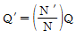
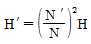
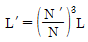
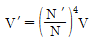
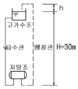
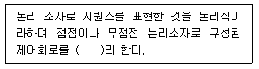
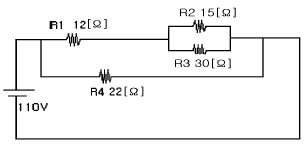

건축설비기사 (2004-09-05 기출문제)
1과목: 건축일반
1. 벽돌벽에 관한 설명으로 알맞지 않는 것은?
- 각 층의 대린벽으로 구획된 벽에서는 문꼴의 나비의 합계는 그 벽길이의 1/2이하로 한다.
- 벽길이는 20m 이상일 때는 부축벽으로 보강한다.
- 내력벽으로 둘러싸인 부분의 바닥 면적은 80m2를 초과할 수 없다.
- 테두리보의 춤은 벽두께의 1.5배 이상으로 한다.
(정답률: 50%)

2. 음의 잔향시간에 관한 설명 중 적당치 않은 것은?
- 실내 벽면의 흡음율이 높으면 잔향시간은 짧아진다.
- 잔향시간이 짧으면 짧을수록 실내 음향 환경에는 유리하다.
- 잔향시간은 실의 용적이 클수록 길어진다.
- 실내의 음향적 성상 즉, 음환경을 나타내는 중요한 요소이다.
(정답률: 70%)
3. 열환경 지표 중 기온과 주벽의 복사열 및 기류의 영향을 조합시킨 지표로서, 습도의 영향이 고려되어 있지 않은 것은?
- 작용온도
- 등온지수
- 유효온도
- 합성온도
(정답률: 54%)
4. 주택의 욕실계획으로 잘못된 것은?
- 출입문은 거실쪽으로 열리게 한다.
- 거실과 침실에서 멀지 않게 한다.
- 천장은 약간 경사지게 하는 것이 좋다.
- 욕실을 구성하는 주요한 요소는 욕조와 씻는 곳, 샤워 및 탈의 공간이다.
(정답률: 70%)
5. 부동침하의 원인으로 부적당한 것은?
- 건물이 이질지층에 있을때
- 지하수위가 부분적으로 변할때
- 지하실을 설치했을때
- 부분적으로 증축했을때
(정답률: 82%)
6. 공동주택의 각 평면형식에 대한 설명 중 옳지 않은 것은?
- 중복도형은 도시지역 독신자 아파트에 유리하다.
- 집중형은 채광, 통풍조건이 좋기 때문에 저밀도의 주거단지에 이용된다.
- 편복도형은 복도가 개방형이므로 각호의 통풍 및 채광이 양호하다.
- 계단실형은 각 호의 독립성이 양호하다.
(정답률: 75%)
7. 보강콘크리트블록조에 관한 기술로 틀린 것은?
- 막힌 줄눈은 피하고 통줄눈으로 한다.
- 내력벽의 벽량은 15cm/m2 이상으로 한다.
- 벽체에 철근이 충분할 경우에는 테두리보를 설치할 필요가 없다.
- 보강철근은 굵은 것을 조금 넣는 것보다 가는 것을 많이 넣는 것이 좋다.
(정답률: 70%)
8. 사무소의 엘리베이터에 대한 기술 중 틀린 것은?
- 특별한 이유가 없으면 1개소에 집중한다.
- 외래자에게 직접 잘 알려질 수 있는 위치에 배치한다
- 엘리베이터 홀의 최소 면적은 1인당 1.2m2 정도로 한다.
- 엘리베이터의 배열은 단거리 보행으로 모든 엘리베이터에 접근할 수 있도록 한다.
(정답률: 82%)
9. 종합병원의 병실계획에 대한 설명으로 옳지 않은 것은?
- 병실의 출입문의 폭은 침대가 통과할 수 있는 폭이어야 한다.
- 환자가 직사광선을 피할 수 있도록 실 중앙에는 전등을 달지 않는 것이 좋다.
- 병실의 창문 높이는 1.5m 이하로 하여 환자가 병상에서 외부를 전망할 수 있게 하는 것이 좋다.
- 환자마다 손이 닫는 위치에 간호사 호출용 벨을 설치한다.
(정답률: 64%)
10. 목조계단 구조에 관한 설명 중 틀린 것은?
- 계단의 디딤널의 양옆에서 지지하는 경사진 재를 계단옆판이라 한다.
- 계단멍에는 계단나비 3m 이상일때 챌판 중간부를 받치기 위하여 설치한 것으로 보통 1.5m 간격으로 배치한다.
- 디딤판의 두께는 보통 3~4㎝의 널판을 사용한다.
- 챌판은 상하 디딤널에 홈파끼우고, 양마구리는 옆판에 홈파넣기 또는 통넣기로 한다.
(정답률: 70%)
11. 도서관 출납 시스템에 대한 설명 중 옳지 않은 것은?
- 자유 개가식은 책이 상하기 쉽고, 배가 순서가 뒤바뀌기 쉽다.
- 폐가식은 열람자 자신이 서가에서 자료를 꺼내서 관원의 확인을 받아 대출기록을 제출하는 방식이다.
- 자유 개가식은 대출 수속이 간편하며 소규모, 아동열람에 편리하다.
- 폐가식은 수속이 번거롭고, 책의 내용을 알고 청구해야 한다.
(정답률: 79%)
12. 병동부의 간호단위에 대한 설명 중 틀린 것은?
- 간호사의 보행거리는 24m 이내가 되도록 한다.
- 각 간호단위마다 방문객 대기실, 진료실, 간호사 대기소 등을 설치한다.
- 1개의 간호사 대기소에서 관리할 수 있는 병상수는 30∼40개 이하로 한다.
- 병실의 종류는 1인실, 2인실, 4인실, 6인실 등을 적절히 배분한다.
(정답률: 58%)
13. 철근콘크리트 구조에서 보의 스터럽(stirrup)에 대한 설명 중 옳지 않은 것은?
- 스터럽은 사인장력 및 전단력에 의한 균열을 방지하기 위해 배치한다.
- 굽힘철근의 유무에 관계없이 전단력의 분포에 따라 배치한다.
- 단순보에서 스터럽은 양단부에 촘촘히 넣고 중앙부에선 넓혀서 배치할 수 있다.
- 부재축에 직각으로 설치되는 스터럽의 간격은 보 춤의 2배 이하로 한다.
(정답률: 50%)
14. 백화점 건축의 에스켈레이터에 관한 기술로서 알맞지 않은 것은?
- 엘리베이터보다 수송량이 크다.
- 엘리베이터보다 설비비가 낮고, 소요면적도 작다.
- 고객시야가 좋고, 고객을 기다리게 하지 않는다.
- 설치시 층 높이에 대한 고려가 필요하다.
(정답률: 100%)
15. 대형체육관의 지붕 구조로 가장 부적당한 것은?
- 셸 구조
- 절판 구조
- 현수 구조
- 조적 구조
(정답률: 70%)
16. 벽체의 표면결로방지 대책으로 맞는 것은?
- 난방에 의한 수증기 발생을 제한한다.
- 실내의 습도를 높인다.
- 실내의 환기회수를 줄인다.
- 벽체의 표면온도를 실내 공기의 노점온도보다 낮게 한다.
(정답률: 알수없음)
17. 상점의 진열장에 관한 설명 중 옳지 않은 것은?
- 진열장의 크기는 상점의 종류와는 관계가 없다.
- 진열장의 바닥높이는 상품의 종류에 따라 다르다.
- 진열장이 벽면으로 인해 상점내부와 차단될 때에는 진열장에 외기가 통하도록 하여 진열장 유리의 흐림을 방지한다.
- 진열장 내부의 밝기를 인공적으로 높게 함으로써 진열장의 반사를 방지할 수 있다.
(정답률: 73%)
18. 잔향시간은 실내에 일정한 세기의 음을 공급하여 정상상태가 된 후, 음원을 정지시킨 후 실내의 평균에너지 밀도가 처음 값에서 얼마 감쇠하는데 소요되는 시간으로 규정 되는가?
- 40dB
- 50dB
- 60dB
- 70dB
(정답률: 알수없음)
19. 다음 철골보에 관한 설명 중 틀린 것은?
- 격자보는 I형강을 절단하여 구멍이 나게 맞추어 용접한 보로서 구멍은 각 층의 배관에 이용된다.
- 래티스보에 접합판을 대서 접합한 보를 트러스보라 한다.
- 판보는 웨브에 철판을 쓰고 상하부에 플랜지철판을 용접하거나 ㄱ자형강을 리벳접합한 것이다.
- 형강보는 주로 I형강 또는 H형강이 많이 쓰인다.
(정답률: 30%)
20. 반자에 대한 설명으로 옳은 것은?
- 제물반자는 주로 나무구조 또는 철구조에 쓰이고, 상층바닥틀 또는 지붕틀에 달아맨 반자이다.
- 주택 거실의 반자는 그 높이를 2.1m 이상으로 하여야한다.
- 반자틀은 보통 45cm 간격으로 수평으로 건너대고 여기에 직각으로 댄 반자틀받이에 못박아댄 것으로, 달대라고도 한다.
- 구성반자에는 널반자, 넓은판반자, 종이반자가 있다.
(정답률: 10%)
2과목: 위생설비
21. 다음 중 일반배수관내의 최소 유속은?
- 0.5m/s
- 0.6m/s
- 0.7m/s
- 1.0m/s
(정답률: 48%)
22. 통기배관에 관한 설명 중 옳지 못한 것은?
- 통기입관의 하부는 관경을 축소하지 않고 최저위의 배수횡지관보다 저위치에서 배수입관이나 배수횡주관에 접속하도록 한다.
- 통기관 말단의 개구부가 동결에 의해서 패쇄될 염려가 있는 경우는 개구부의 관경을 50mm 이상으로 해야한다.
- 통기관은 오수의 유입으로 통기가 방해되지 않도록해야 한다.
- 통기관 말단은 건물의 돌출부 하부에 개구해서는 안된다.
(정답률: 알수없음)
23. 터어빈 펌프의 회전수 N을 N'로 바꿀 때 양수량 등에 비례법칙이 성립한다, 아래의 식에서 옳지 않은 것은? (단, 회전수 N일 때, 양수량:Q, 양정:H, 축동력:L, 유속 :V, N'일 때는 각각 Q', H', L', V'이다.)




(정답률: 60%)
24. 다음 각 소화설비의 방수압력에 대한 설명 중 옳지 않은 것은?
- 옥내소화전 설비는 어느 층에 있어서나 층의 모든 옥내소화전을 동시에 사용하는 경우에는 각 노즐 선단 의 방수압력이 1.7kg/cm2 이상이어야 한다.
- 드렌처 설비는 모든 드렌처 헤드를 동시에 사용할 경우 각 헤드 선단의 방수압력이 1kg/cm2 이상이어야 한다.
- 스프링클러 설비는 스프링클러 헤드를 동시에 사용할 경우에 각 헤드 선단의 방수압력이 1kg/cm2 이상이어야 한다.
- 옥외소화전 설비는 2개의 옥외소화전을 동시에 사용하는 경우에 각 노즐 선단의 방수압력이 1.5kg/cm2 이상이어야 한다.
(정답률: 50%)
25. 어떤 정화조에서 유입수의 BOD가 150(mg/L), 유출수의 BOD가 60(mg/L)일 때 이 정화조의 BOD 제거율은?
- 60%
- 90%
- 75%
- 40%
(정답률: 86%)
26. 급수배관 내에 공기실(Air chamber)을 설치하는 주된 이유는?
- 급수관의 흐름을 원활히 하기 위해
- 수압시험을 하기 위해
- 수격작용을 방지하기 위해
- 통기관의 연결을 위해
(정답률: 알수없음)
27. 다음의 소화설비에 관한 설명 중 옳지 않은 것은?
- 드렌처(drencher) 설비란 인접건물로부터의 연소방지를 주목적으로 한다.
- 연결송수관 전체를 소방대 전용전 또는 사이어미즈 커넥션(Siamese Connection)이라 한다.
- 물분무소화설비는 유류와 전기화재의 소화에는 유효하지 않다.
- 이산화탄소 소화설비는 산소공급의 차단에 의한 질식소화를 주로 하는 소화설비이다.
(정답률: 65%)
28. 그림에서 팽창관의 입상높이 h는 몇 m 인가? (단, 급탕 및 급수온도는 각각 80℃, 6℃이며, 이때의 물의 밀도는 각각 0.9718 kg/L, 0.99997 kg/L이다. 또한 H는 30 m 이다.)

- 0.85
- 0.87
- 0.90
- 0.93
(정답률: 67%)
29. 트랩에 관한 설명으로 옳지 않은 것은?
- 배수계통 중 일부분에 물을 저수함으로써 물은 자유롭게 유통시키지만, 공기나 가스는 유통하지 못하게 하는 기구이다.
- P트랩, S트랩, U트랩은 관트랩의 일종으로 자정작용이 있지만, 봉수가 파괴되기 쉬운 결점이 있다.
- 가솔린 트랩은 레스토랑 주방의 배수 중에 합류되어 있는 지방분을 트랩 내에서 응결시켜 이것을 제거하고, 지방분이 배수중에 유입하는 것을 막기위한 것이다.
- 자기사이펀 작용, 유도사이펀 작용, 모세관 현상, 증발작용 등은 모두 트랩의 봉수파괴원인에 해당한다.
(정답률: 알수없음)
30. 배관의 신축이음쇠에 대한 설명으로 옳은 것은?
- 스위블형 : 2개 이상의 엘보를 조합한 것으로 굴곡부의 압력강하가 크고 신축량이 큰 배관에 주로 사용된다.
- 슬리브형 : 관의 신축을 슬리브의 변형으로 흡수하도록 한 것으로서 곡선배관부위에도 사용이 가능하다.
- 벨로즈형 : 신축량이 큰 장점이 있으나 설치장소를 많이 차지하며 누설우려가 있다.
- 루프형 : 관의 구부림과 관자체의 가요성을 이용해서 배관의 신축을 흡수한다.
(정답률: 60%)
31. 다음의 가스배관에 관한 설명 중 옳은 것은?
- 건물 구조체의 팽창이음부에는 배관해서는 안된다.
- 건물내부의 가스배관은 매설하고, 외부의 배관은 노출시켜야 한다.
- 건축물의 주요구조부를 관통하도록 한다.
- 분기관에 밸브 또는 콕을 설치해서는 안된다.
(정답률: 73%)
32. 직경 200mm의 강관에 매분 2400L의 물을 보내면 강관내를 흐르는 물의 속도는?
- 0.86m/sec
- 1.27m/sec
- 3.80m/sec
- 5.43m/sec
(정답률: 77%)
33. 세정밸브식(Flush Valve) 대변기에 대한 설명으로 틀린 것은?
- 낮은 수압(0.3kg/cm2 이하)에서도 사용이 가능하다.
- 세정시의 소음이 크다.
- 세정용 탱크가 필요 없다.
- 역류방지기(Vacuum Breaker)가 필요하다.
(정답률: 82%)
34. 급탕배관에서 안전을 위해 설치하는 팽창관 및 팽창탱크에 관한 설명으로 틀린 것은?
- 팽창관 도중에는 밸브를 설치하지 않는다.
- 가열장치의 과도한 수온 상승을 방지하기 위해 설치한다.
- 개방식 팽창탱크는 팽창수량을 간접적으로 받는 용기로서 일반적으로 보급수탱크를 겸하고 있다.
- 팽창탱크는 대기에 개방한 개방형 팽창탱크와 개방하지 않은 밀폐형 팽창탱크가 있다.
(정답률: 50%)
35. 위생설비 유니트화의 장점이 아닌 것은?
- 시공의 균질화
- 공기의 단축
- 공정의 단순화
- 현장작업 스페이스의 증가
(정답률: 77%)
36. 다음 급수방식 중 위생성 및 유지, 관리 측면에서 가장 바람직하며 일반적으로 비교적 소규모의 건물에 사용되는 방식은?
- 수도직결 방식
- 고가탱크 방식
- 압력탱크 방식
- 세퍼레이트 방식
(정답률: 알수없음)
37. 10℃의 냉수 100㎏에 70℃의 탕 100㎏을 혼합하면 혼합수의 온도는 몇 ℃인가?
- 36℃
- 38℃
- 40℃
- 42℃
(정답률: 82%)
38. 통기방식에 대한 설명 중 옳지 않은 것은?
- 각개통기방식은 트랩마다 통기되기 때문에 가장 안정도가 높은 방식으로서 자기사이폰 작용의 방지에도 효과가 있다.
- 소벤트 시스템, 섹스티아 시스템은 신정통기방식을 변형한 것이다.
- 신정통기방식을 세분하면 환상통기방식과 회로통기방식이 있다.
- 루프통기방식은 2개 이상의 기구트랩에 공통으로 하나의 통기관을 설치하는 방식이다.
(정답률: 58%)
39. 급수설비에서 동시사용유량 산정시 관계가 없는 것은?
- Hunter 곡선
- 기구급수부하단위
- 설치된 위생기구수
- 관균등표
(정답률: 69%)
40. 물의 경도에 대한 설명 중 옳지 않은 것은?
- 경도가 큰 물을 경수, 경도가 낮은 물을 연수라고 한다.
- 연수는 쉽게 비누거품을 일으키지만 음료용으로는 적합하지 않다.
- 경수를 보일러 용수로 사용하면 관내부에 스케일이 생겨 전열효율이 감소된다.
- 물의 경도는 물 속에 녹아있는 칼슘, 마그네슘 등의 염류의 양을 탄산마그네슘의 농도로 환산하여 나타낸 것이다.
(정답률: 알수없음)
3과목: 공기조화설비
41. 전공기식의 공기조화에서 에너지 절약을 위해 중간기에 외기냉방도 가능토록 계획할때 공조기 외에 시스템 구성을 위해 도입되어야 할 기기는 무엇인가?
- 재열기
- 고효율 공기정화장치
- 전열교환기
- 리턴에어용 송풍기
(정답률: 알수없음)
42. 건구온도 30℃,절대습도 0.0134㎏/㎏'인 공기 5000m3/h를 표면온도가 10℃인 냉각코일로 냉각감습할 경우 응축수분량은 얼마인가? (단, 습공기의 비중량 = 1.2㎏/m3 10℃ 포화습공기의 절대습도 = 0.0076㎏/㎏' 냉각코일의 바이패스 팩터 = 0.1)
- 29.24㎏/h
- 31.32㎏/h
- 34.80㎏/h
- 37.23㎏/h
(정답률: 40%)
43. 송풍기의 풍량을 제어하는 방법의 하나로 비용이 많이 들지만 효율이 좋은 방식이며, 최근에는 인버터를 사용하여 전기의 주파수를 변화시키는 방식을 많이 사용한다. 이와 같은 송풍기 풍량제어방식은?
- 토출댐퍼에 의한 제어
- 흡입댐퍼에 의한 제어
- 가변 피치 제어
- 회전수에 의한 제어
(정답률: 알수없음)
44. 덕트경로중 그 관경이 확대되었을 경우 압력변화에 관한 설명이다. 적당한 것은?
- 전압이 증가한다.
- 동압이 증가한다.
- 정압이 증가한다.
- 전압, 정압, 동압이 모두 증가한다.
(정답률: 알수없음)
45. 에어필터 효율 측정법에서 고성능 필터를 측정하는데 적합한 방식은?
- 중량법
- 비색법
- 변색도법
- 계수법
(정답률: 46%)
46. 공조방식 중 외기냉방이 가능하지 않은 것은?
- 변풍량 단일덕트방식
- 팬코일유니트방식
- 각층유니트방식
- 이중덕트방식
(정답률: 55%)
47. 기존건물의 콘크리트 천장에 배관을 지지하기 위한 인서트 및 앵커로서 적당한 것은?
- 콘크리트 인서트
- C - 크램프
- 롱너트
- 익스팬션 앵커
(정답률: 60%)
48. 환기로 인해 발생하는 외기부하 중 취득잠열계산에 필요한 값은?
- 도입외기량, 외기와 실내공기의 온도차
- 도입외기량, 외기와 실내공기의 절대습도차
- 도입외기량, 외기와 실내공기의 상대습도차
- 송풍기의 송풍량, 외기와 실내공기의 엔탈피차
(정답률: 알수없음)
49. 환기설비가 설치된 다음 실중 실내압력이 정압(+)인 것은?
- 보일러실
- 주방
- 욕실
- 화장실
(정답률: 92%)
50. 기준면 보다 20m 높이에 있는 관내에 물(γ = 1000㎏/m3)이 압력 P = 6000㎏/m2, 유속 V = 3㎧로 흐를때 이 물의 전수두(m)는?
- 18.7
- 26.5
- 38.7
- 83.1
(정답률: 알수없음)
51. 공기조화와 직접난방을 비교한 다음 설명중 적당한 것은?
- 스페이스(space)면에서는 공기조화 설비가 유리하다.
- 실내 열환경의 효과적인 제어를 위해서는 직접난방이 바람직하다.
- 온수난방은 공기조화에 비해 소음발생이 적다.
- 설비비 면에서는 직접난방이 불리하다.
(정답률: 55%)
52. t1= 33℃, x1= 0.021㎏/㎏'의 공기 20%와 t2= 25℃, x2= 0.012㎏/㎏'의 공기 80%를 혼합하였을 때의 공기 상태는?
- t = 26.6℃, x = 0.0138(㎏/㎏')
- t = 27.6℃, x = 0.0128(㎏/㎏')
- t = 28.6℃, x = 0.0118(㎏/㎏')
- t = 29.6℃, x = 0.0108(㎏/㎏')
(정답률: 55%)
53. 다음 중 환기효과가 가장 큰 환기법은?
- 압입· 흡출병용방식
- 압입방식
- 흡출방식
- 자연환기방식
(정답률: 62%)
54. Yaglow씨 등에 의해 제안된 온도,습도 및 기류속도의 3가지 조합에 의한 온열환경의 평가지표는?
- 유효온도
- 작용온도
- 불쾌지수
- 신유효온도
(정답률: 93%)
55. 외기량을 Gf[kg/h] 또는 Qf[m3/h]라 할때 냉방시에 현열 취득량 qFS[㎉/h]은? (단, 외기 및 실내공기의 온도는 각각 to, ti[℃],습도는 각각 xo, xi[㎏/㎏']이다)
- qFS = 0.29 Gf(to - ti)
- qFS = 0.29 Qf(to - ti)
- qFS = 0.24 Qf(to - ti)
- qFS = 1.2 Gf(to - ti)
(정답률: 34%)
56. 다음중 원심펌프의 구경과 가장 관련이 있는 것은?
- 유량
- 양정
- 동력
- 비교 회전수
(정답률: 62%)
57. 급기 덕트계통에 설계값인 풍량 6000m3/h, 정압 40㎜Aq, 축동력이 2.5HP인 송풍기를 설치한 후 덕트말단에서 풍량을 측정한 결과 5000m3/h이었다. 이 덕트계에 설계 풍량을 급기하기 위해 송풍기의 모터를 교체할 경우 몇마력(HP)이 필요한가? (단, 덕트계에 공기누설이 없고, 송풍기의 효율은 일정한 것으로 가정한다.)
- 2.08HP
- 3HP
- 3.6HP
- 4.32HP
(정답률: 34%)
58. 다음중 에어커튼(AIR CURTAIN)을 가장 옳게 설명한 것은?
- 건물의 출입구에 실내열의 차단을 목적으로 설치한다.
- 건물의 창 등에 실내열의 차단을 목적으로 설치한다.
- 내벽대신 공간의 분리를 목적으로 설치한다.
- 체육관 등 큰 공간의 효과적 공조를 목적으로 설치한다.
(정답률: 91%)
59. 체크밸브에 관한 다음 설명 중 부적당한 것은?
- 수직배관에만 사용된다.
- 유체의 역류를 방지하기 위한 것이다.
- 스윙형과 리프트형이 있다.
- 펌프등 기기의 출구부분에 설치한다.
(정답률: 67%)
60. 주로 분리형(스플릿형) 패키지에어콘의 실내기와 실외기를 배관으로 연결할 경우에 사용되는 동관 접합법으로, 분해와 재결합이 용이하여 용접 접합이 어려울 때나 화재의 위험이 있어 용접 접합을 할 수 없는 곳에서 이용되는 접합법은?
- 몰코식 이음
- 나팔관식 이음
- 빅토릭 이음
- 기볼트 이음
(정답률: 43%)
4과목: 소방 및 전기설비
61. 유전체를 끼워 양측에 금속박을 놓아둔 구조로 정전용량을 갖는 전기기기는?
- 콘덕턴스
- 저항
- 인덕턴스
- 콘덴서
(정답률: 알수없음)
62. 다음 ( )안에 들어갈 용어로 가장 알맞은 것은?

- 논리회로
- 논리곱회로
- 논리합회로
- 논리부정회로
(정답률: 73%)
63. 절연체 또는 전선피복 절연물의 절연저항, 즉 전류차단능력을 측정하는 계측기는?
- 계기용 변압기
- 역률계
- 영상변류기
- 메거
(정답률: 73%)
64. 자동제어방식에서 디지털방식에 대한 설명 중 옳지 않은 것은?
- 기능의 고급화를 도모할 수 있다.
- 각종 제어로직은 손쉽게 소프트웨어에 의해 조정될 수 있다.
- 자기진단 기능을 보유하고 있다.
- 제어의 정밀도가 낮으며 신뢰성이 다소 떨어진다.
(정답률: 89%)
65. 건물의 자동제어방식에서 디지털방식에 해당하는 것은?
- 전기식
- 전자식
- 공기식
- DDC방식
(정답률: 알수없음)
66. 정격전압 220V에서 1210W의 전력을 소비하는 단상전열기를 200V에서 사용하면 소비전력은 얼마인가?
- 1000W
- 1089W
- 1100W
- 1210W
(정답률: 알수없음)
67. 천장에 작은 구멍을 뚫어 그 속에 기구를 매입한 것으로, 기구 본체가 밖으로 나오지 않기 때문에 공간을 말끔히 정리하기 쉬운 이점이 있는 건축화 조명의 방식은?
- 다운라이트
- 코브라이트
- 코니스라이트
- 밸런스라이트
(정답률: 70%)
68. 전동기의 회전 방향을 바꾸고자 할 때 적용되는 법칙은?
- 암페어 오른손의 법칙
- 키르히호프 법칙
- 플레밍 오른손의 법칙
- 플레밍 왼손의 법칙
(정답률: 65%)
69. 차동식 분포형 화재감지기에 해당되지 않는 것은?
- 열반도체식
- 열전대식
- 공기관식
- 스폿식
(정답률: 46%)
70. 예비 전원 설비 중 자가발전설비는 비상 사태 발생 후 정격 전압을 확립하여 몇 분 이상 안정적으로 전기를 공급할 수 있어야 하는가?
- 10분
- 20분
- 30분
- 60분
(정답률: 59%)
71. 양전하를 가지고 있는 물질과 음전하를 가지고 있는 물질을 금속선으로 연결하면 두 전하간의 흡인력으로 음전하는 양전하를 가지고 있는 물질로 이동하는데, 이러한 음전하의 이동을 무엇이라고 하는가?
- 전압
- 전류
- 저항
- 전력
(정답률: 90%)
72. 다음 중 조도의 단위는?
- [cd]
- [lm]
- [lx]
- [sb]
(정답률: 80%)
73. 콘덴서만의 회로에서 전압과 전류사이의 위상관계는?
- 전압이 전류보다 180° 앞선다.
- 전압이 전류보다 180° 뒤진다.
- 전압이 전류보다 90° 앞선다.
- 전압이 전류보다 90° 뒤진다.
(정답률: 46%)
74. 20[kVA]의 단상 변압기 2대로 공급할 수 있는 최대 3상전력[kVA]은?
- 8.66
- 17.61
- 23.72
- 34.64
(정답률: 64%)
75. 작동방법에 따른 자동제어밸브의 분류에 속하지 않는 것은?
- 자기식
- 공기작동형
- 전기유압식
- 플랜지식
(정답률: 53%)
76. 다음 직병렬회로에서 전압은 110V이며 R1=12Ω, R2=15Ω, R3=30Ω, R4=22Ω이다. 전체합성저항 R은?

- 10Ω
- 22Ω
- 34Ω
- 11Ω
(정답률: 60%)
77. 광원으로부터의 빛의 방향과 수직인 면의 빛의 조도는 광원과의 거리와 어떠한 관계에 있는가?
- 거리의 제곱에 반비례
- 거리의 제곱에 비례
- 거리에 반비례
- 거리에 비례
(정답률: 47%)
78. 저항 R1, R2 를 병렬로 접속하면 합성저항은?
- R1+R2
- 1/R1+R2
- R1+R2/R1R2
- R1R2/R1+R2
(정답률: 70%)
79. 일반적으로 특별3종 접지공사의 접지 저항값은 몇(Ω)이하가 되어야 하는가?
- 10
- 20
- 100
- 500
(정답률: 82%)
80. 신축건물의 전력을 공급하기 위한 수변전설비의 설계시부하설비 용량을 구하고자 할 때 관계식을 가장 바르게 표기한 것은?
- 부하설비용량=최대수용전력× 부하율
- 부하설비용량=최대수용전력× 부등율
- 부하설비용량=최대수용전력× 연면적
- 부하설비용량=부하밀도× 연면적
(정답률: 32%)
5과목: 건축설비관계법규
81. 판매 및 영업시설인 경우 바닥면적의 합계가 얼마 이상이면 연결살수설비를 설치하여야 할 특정소방대상물이 되는가?
- 500m2
- 1,000m2
- 1,500m2
- 2,000m2
(정답률: 54%)
82. 지하층의 구조기준에 대한 사항으로 옳은 것은?
- 거실의 바닥면적의 합계가 1,000m2 이상인 층에는 환기설비를 설치할 것
- 지하층의 바닥면적이 500m2 이상인 층에는 식수공급을위한 급수전을 1개소 이상 설치할 것
- 바닥면적이 500m2 이상인 층에는 피난층 또는 지상으로 통하는 직통계단을 방화구획으로 구획되는 각 부분마다 1개소이상 설치할 것
- 바닥면적이 100m2 이상인 층에는 직통계단외에 피난층 또는 지상으로 통하는 비상탈출구 및 환기통을 설치할 것
(정답률: 59%)
83. 지정문화재로서 연면적 1,000m2인 건축물에 설치해야하는 소방시설은?
- 옥내소화전설비
- 스프링클러설비
- 물분무등소화설비
- 옥외소화전설비
(정답률: 40%)
84. 산업자원부장관이 에너지저장의무를 부과할 수 있는 대상자가 아닌 것은?
- 전기사업법에 의한 전기사업자
- 석탄산업법에 의한 석탄가공업자
- 도시가스사업법에 의한 도시가스사업자
- 연간 12,000 티· 오· 이 이상의 에너지를 사용하는 자
(정답률: 65%)
85. 오수· 분뇨 및 축산처리에 관한 법률에 의해 오수처리시설에서 배출되는 방류수에 대한 염소 등의 소독을 해야할 경우는?
- 1일 처리용량이 100m3 이상인 오수처리시설
- 1일 처리용량이 200m3 이상인 오수처리시설
- 1일 처리대상이 300인 이상인 단독정화조
- 1일 처리대상이 400인 이상인 단독정화조
(정답률: 39%)
86. 비상경보설비를 설치하여야 할 특정소방대상물의 기준이 잘못된 것은?
- 무창층 - 바닥면적 200m3이상
- 옥내작업장 - 50인 이상의 근로자가 작업
- 지하층 공연장 - 바닥면적 100m3이상
- 지하가중 터널 - 길이 500m이상
(정답률: 20%)
87. 공연장의 개별관람석 바닥면적이 300m3인 경우 출구의 수는?(단, 각 출구의 유효너비는 2m 이다.)
- 없음
- 1개
- 2개
- 3개
(정답률: 55%)
88. 건축법상 주요구조부에 해당하지 않는 것은?
- 기둥
- 바닥
- 지붕틀
- 옥외계단
(정답률: 알수없음)
89. 내화구조에 관한 내용으로 옳지 않은 것은?
- 철골철근콘크리트조로서 벽의 두께가 10㎝ 이상인 것
- 철근콘크리트조로서 기둥의 작은 지름이 20㎝ 이상인 것
- 철근콘크리트조로서 바닥의 두께가 10㎝ 이상인 것
- 철근콘크리트조로 된 보
(정답률: 30%)
90. 다음 중 배연설비의 설치기준으로 틀린 것은?
- 배연창은 배연창의 상변과 천장 또는 반자로부터 수직거리가 90cm 이내에 설치할 것
- 반자높이가 바닥으로부터 3m 이상인 경우에는 배연창의 하변이 바닥으로부터 2.1m 이상의 위치에 놓이도록 설치할 것
- 배연구는 손으로도 열고 닫을 수 있도록 할 것
- 배연창의 유효면적은 0.5m2이상으로서 그 면적의 합계가 당해 건축물의 바닥면적의 1/100 이상일 것
(정답률: 50%)
91. 방화구획의 기준에 관한 설명 중 틀린 것은?
- 5층이상의 층은 층마다 구획한다.
- 지하층은 층마다 구획한다.
- 10층이하의 층은 바닥면적 1,000m2이내마다 구획한다.
- 11층 이상의 층은 바닥면적 200m2이내마다 구획한다.
(정답률: 39%)
92. 갑종방화문과 을종방화문의 구분 기준은?
- 사용하는 철판의 두께
- 비차열의 시간
- 망입유리창 사용 여부
- 문의 두께
(정답률: 64%)
93. 에너지이용합리화법의 용어 정의 중 맞지 않는 것은?
- 에너지란 연료· 열 및 전기를 말한다.
- 연료란 석유· 석탄· 대체에너지 기타 열을 발생하는 열원을 말한다.
- 열사용기자재란 에너지를 사용하여 열을 발생시키는 기자재를 말한다.
- 에너지사용자란 에너지사용시설의 소유자 또는 관리자를 말한다.
(정답률: 알수없음)
94. 다음 중 에너지절약 전문기업이 국가의 지원을 받을 수 있는 사업이 아닌 것은?
- 대체에너지원의 개발사업
- 에너지절약의 홍보사업
- 에너지절약형 시설투자에 관한 사업
- 에너지절약형 기자재의 연구개발사업
(정답률: 90%)
95. 가연성가스를 얼마 이상 저장· 취급하는 시설인 경우가 방화관리자를 두어야 하는 특정소방대상물인가?
- 1천톤
- 2천톤
- 3천톤
- 5천톤
(정답률: 77%)
96. 특정사용기자재중 산업자원부령이 정하는 검사대상기기의 제조업자는 그 검사대상기기의 제조에 관하여 누구의 검사를 받아야 하는가?
- 건설교통부장관
- 산업자원부장관
- 시· 도지사
- 시장· 군수· 구청장
(정답률: 40%)
97. 다음 건축물 중 그 주요구조부를 내화구조로 하여야 하는것은?
- 문화 및 집회시설의 용도에 쓰이는 건축물로서 집회실의 바닥면적의 합계가 150제곱미터인 것
- 주점영업의 용도가 아닌 위락시설의 용도에 쓰이는 건축물로서 그 용도에 쓰이는 바닥면적의 합계가 400제곱미터인 것
- 건축물의 2층이 숙박시설의 용도에 쓰이는 건축물로서 그 용도에 쓰이는 바닥면적의 합계가 400제곱미터인 것
- 공장의 용도에 쓰이는 건축물로서 그 용도에 사용하는 바닥면적의 합계가 1500제곱미터인 것
(정답률: 39%)
98. 건축허가신청에 필요한 기본설계도서 중 배치도에 표시하여야 할 사항으로 옳지 아니한 것은?
- 주차장 규모
- 대지의 종· 횡단면도
- 공개공지 및 조경계획
- 대지에 접한 도로의 길이 및 너비
(정답률: 50%)
99. 주거용 건축물의 최소 급수관지름에 관한 설명 중 틀린 것은?
- 1가구일때 15mm 이다.
- 5세대일때 25mm 이다.
- 세대의 구분이 불분명하고 주거용 바닥면적이 85m2 이하이면 20mm 이다.
- 세대의 구분이 불분명하고 주거용 바닥면적이 500m2초과시는 50mm 이다.
(정답률: 60%)
100. 지하층의 비상탈출구에 관한 기준으로 옳지 않은 것은?
- 유효너비는 0.75m 이상으로 하고, 유효높이는 1.5m이상으로 할 것
- 비상탈출구는 출입구로부터 2m 이상 떨어진 곳에 설치할 것
- 지하층의 바닥으로부터 비상탈출구의 아랫부분까지의 높이가 1.2m 이상이 되는 경우에는 벽체에 발판의 너비가 20㎝ 이상인 사다리를 설치할 것
- 비상탈출구에서 피난층 또는 지상으로 통하는 복도나 직통계단까지 이르는 피난통로의 유효너비는 0.75m 이상으로 할 것
(정답률: 58%)
벽길이가 20m 이상일 때는 부축벽으로 보강하는 이유는 벽의 안정성을 확보하기 위해서이다. 벽길이가 길어질수록 벽의 안정성이 떨어지기 때문에 부축벽을 설치하여 벽의 안정성을 높이는 것이다.